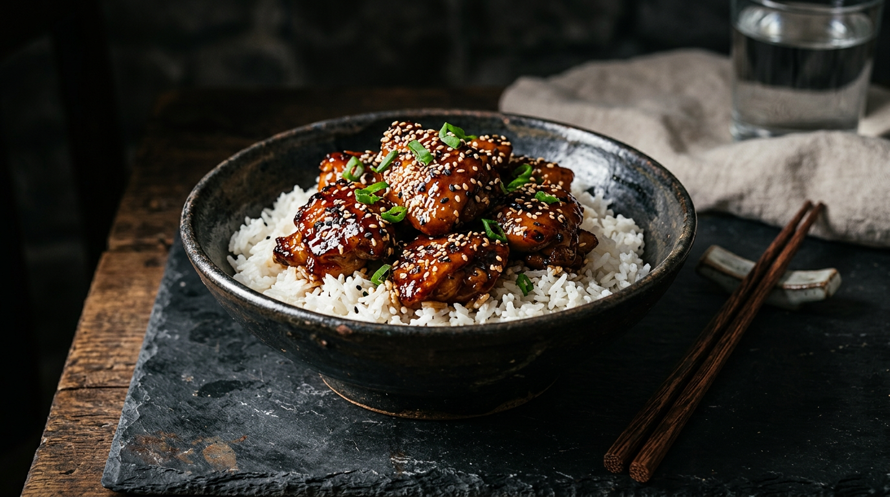

🍃
Nutrilish
30-Minute
Meal Prep
20 High-Protein Recipes
Fast, delicious meals for people who actually have things to do.

Free Recipe Collection • 2026
Most meal prep fails not because of willpower — it fails because Sunday cooking sessions turn into 3-hour ordeals. These 20 recipes were engineered with a single constraint: 30 minutes, start to finish.
Every recipe uses one pan, one pot, or one sheet. Proteins hit 30g+ per serving. Macros are pre-calculated. No fancy equipment, no obscure ingredients. Just real food, built fast, with enough flavor to make you actually look forward to eating it.
Pro Tip — Batch Cooking Strategy
Each recipe makes 4 servings. Prep 3–4 recipes on Sunday and you're set for the week. Mix proteins — do a chicken recipe, a fish recipe, and a beef recipe for variety without extra work.
Recipe Index
1
Honey Garlic Chicken + Rice
4
Greek Chicken Meatballs
5
Beef + Broccoli Stir-Fry
9
Mediterranean Turkey Skillet
10
BBQ Chicken Sweet Potato
12
Southwest Black Bean Bowl
14
Italian Sausage + Peppers
15
Garlic Butter Shrimp + Zoodles
16
Korean Beef Lettuce Wraps
20
Protein-Packed Fried Rice
2 / 6
NUTRILISH
Ingredients
- 1.5 lb lean ground beef
- 3 tbsp soy sauce
- 2 tbsp gochujang
- 1 tbsp sesame oil
- 2 cloves garlic
- Bibb lettuce, rice
- Kimchi, green onions, sesame
Instructions
- Brown ground beef in skillet, drain fat.
- Add soy sauce + gochujang + sesame oil + garlic.
- Cook 3 min until sauce reduces and coats the beef.
- Spoon beef mixture into bibb lettuce cups.
- Top with rice, kimchi, green onions, and sesame seeds.
Ingredients
- 1.5 lb chicken breast, cubed
- 1/2 cup plain yogurt
- 2 tbsp tikka masala paste
- Basmati rice, naan
- Cucumber, red onion
- Fresh mint
Instructions
- Marinate chicken in yogurt + tikka masala paste.
- Cook basmati rice per package directions.
- Sear marinated chicken over high heat, 5–6 min.
- Build bowls with rice and chicken.
- Top with diced cucumber, red onion, and fresh mint. Serve with naan.
Ingredients
- 1 lb ground pork
- 1 bag coleslaw mix
- 3 tbsp soy sauce
- 1 tbsp sesame oil
- 2 cloves garlic
- 1 tbsp ginger
- Green onions, sriracha
Instructions
- Brown ground pork in skillet, drain excess fat.
- Add minced garlic + ginger, cook 1 min.
- Add coleslaw mix, stir-fry 4 min until softened.
- Add soy sauce + sesame oil, toss to combine.
- Top with sliced green onions and a drizzle of sriracha.
Ingredients
- 4 cod fillets (6oz each)
- 2 tbsp lemon pepper seasoning
- 1 lb green beans
- 2 cups rice pilaf
- 2 tbsp butter
- Lemon wedges
Instructions
- Cook rice pilaf per package directions.
- Season cod fillets generously with lemon pepper.
- Melt butter in pan over medium-high heat.
- Sear cod 4 min per side until flaky and golden.
- Roast or steam green beans. Plate with lemon wedges.
Ingredients
- 3 cups cooked rice (cold)
- 1 lb chicken breast, diced
- 4 eggs
- 1 cup frozen mixed veggies
- 3 tbsp soy sauce
- 1 tbsp sesame oil
- Green onions, garlic
Instructions
- Scramble eggs in wok, set aside.
- Cook diced chicken 5–6 min until done, remove.
- Stir-fry frozen veggies + garlic 2 min.
- Add cold rice, stir-fry 3 min until heated through.
- Return chicken + eggs, add soy sauce + sesame oil.
- Top with sliced green onions and serve hot.
Get AI-powered nutrition tracking
Snap a photo of these meals and let NutriLish track your macros automatically — no manual logging, no guesswork.
Download NutriLish Free →
6 / 6
NUTRILISH